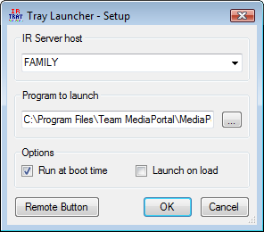

Tray Launcher is a small application that loads into the System Tray and monitors the remote control to launch an application when the designated start button is pressed. You can also launch the application by right-clicking the tray icon and selecting "Launch".
Tray Launcher can be made to start automatically by selecting the "Run at boot" option in setup and can be made to launch any application.
If the application is already running then Tray Launcher will attempt to give it the focus.
